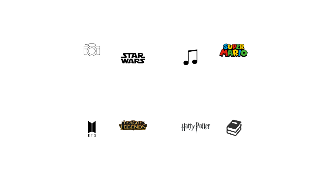
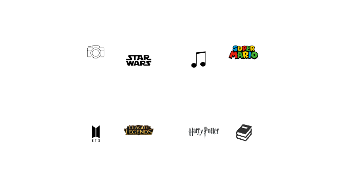

A cultura pop é um conjunto de ideias, tendências e produções que se popularizam na sociedade por meio de diferentes formas de mídia, como música, filmes, livros, séries de televisão, jogos e muito mais. Essa cultura é um reflexo da sociedade em que vivemos e pode ser uma fonte de entretenimento, informação e inspiração.
A música é uma das principais formas de expressão cultural e artística. Ela pode variar de acordo com o gênero, estilo, época e localização geográfica. Desde o pop ao rock, do rap ao sertanejo, a música está presente em todos os momentos de nossas vidas, seja em momentos de festa, em momentos de reflexão, ou em momentos de tristeza.
Os filmes também são uma forma de arte que tem o poder de nos transportar para diferentes lugares e épocas. Eles podem ser uma fonte de entretenimento, mas também podem ser uma ferramenta poderosa para transmitir mensagens e ideias. Os filmes também são uma forma de contar histórias e de explorar a diversidade humana.
Os livros são uma forma de cultura que têm sido apreciados por séculos. Eles nos permitem imaginar mundos diferentes e experimentar as vidas de personagens fictícios. Além disso, os livros são uma fonte inesgotável de conhecimento e informação sobre diversos temas, como ciência, história, literatura e muito mais.
As séries de televisão se tornaram uma das formas mais populares de entretenimento nos últimos anos. Elas permitem aos espectadores se envolverem em histórias complexas e cativantes, muitas vezes contadas ao longo de várias temporadas. As séries de televisão também são uma forma de refletir sobre questões sociais e culturais, além de apresentar diferentes perspectivas sobre a vida.
Os jogos são uma forma de entretenimento que vem ganhando cada vez mais espaço na cultura pop. Eles podem variar desde jogos de tabuleiro até jogos de computador ou consoles. Os jogos podem ser uma fonte de diversão, mas também podem ser uma forma de aprender novas habilidades e competências.
A cultura pop também abrange a moda e as tendências de estilo. As roupas, os acessórios e as cores podem ser utilizados para expressar a individualidade e a criatividade. As tendências de moda mudam constantemente e são influenciadas por muitos fatores, como celebridades, eventos culturais e até mesmo mudanças políticas e sociais.
A cultura pop também pode ser uma forma de escapismo. Quando as pessoas se envolvem em diferentes formas de cultura pop, elas podem se distrair dos problemas do mundo real e se concentrar em algo mais agradável. No entanto, a cultura pop também pode ser uma forma de abordar questões sociais e políticas importantes.
Os fãs de cultura pop muitas vezes se unem em comunidades online ou físicas, compartilhando seu amor e entusiasmo por diferentes formas de mídia. Essas comunidades são uma forma de se conectar com pessoas que têm interesses semelhantes e podem ser uma fonte de apoio emocional.
Em conclusão, a cultura pop é uma forma importante de arte e entretenimento que nos ajuda a entender melhor a sociedade em que vivemos. Ela nos permite experimentar diferentes perspectivas e expandir nossos horizontes. Além disso, a cultura pop pode ser uma fonte de inspiração para criar nossas próprias obras de arte e de expressão.
No entanto, é importante lembrar que a cultura pop não é perfeita e muitas vezes pode perpetuar estereótipos e desigualdades. Por isso, é importante ter um olhar crítico em relação a ela e buscar formas de melhorá-la e torná-la mais inclusiva e diversa.
Por fim, a cultura pop é uma parte importante da nossa vida e pode nos trazer alegria, diversão e reflexão. Ela está em constante evolução e adaptação, refletindo as mudanças na sociedade e nas tendências. Seja através da música, dos filmes, dos livros, das séries de televisão, dos jogos ou da moda, a cultura pop tem o poder de nos conectar e de nos inspirar.